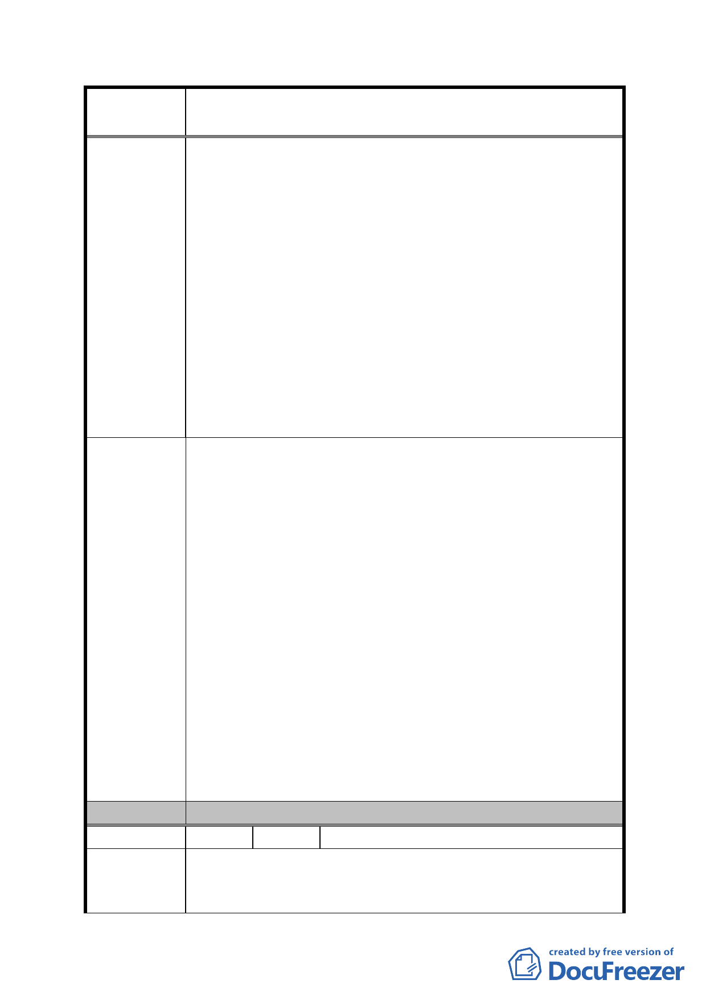

案
名
修訂臺北市「基隆河（中山橋至成美橋段）附近地區土地使
用分區與都市設計管制要點」（北段地區）計畫案
及安全性。
七、有關「十七、本計畫區商業區及娛樂區…如無法依本計
畫規定重新變更開發計畫…須以繳納等值代金代替」部
分：
1、回饋金計算比照 84 年 9 月 27 日公告之「修訂台北市主
要計畫商業區（通盤檢討）計畫案」，然該辦法乃適用於
低強度之住宅使用變更為高強度之商業使用，即便適
用，以一個容積 200％之商業用地來看，公式換算一個
停車位約繳代金為 390 萬殊不合理。
2、土地由低強度利用轉作高強度利用時，為求公平正義方
有回饋代金之產生。現商業用地作住宅使用係高強度作
低強度使用，並未違反公平正義，且高強度轉低強度利
用係受迫於如前所述原因（建議理由三），地主尚未要求
政府補償，焉有本末倒置要求回饋之理？
一、建議每一營業單元樓地板最小面積之限制取消。
二、建議取消商業區、娛樂區最小建蔽率之限制。
三、建議既然規定了開挖率則無須再規定開挖範圍之退縮。
四、（一）建議應回歸「台北市分區使用管制規則」中綜合
設計放寬獎勵及比照第三種商業區規定之精神，
建議回歸原計畫綜合設計放寬獎勵之計算方式。
（二）建議取消「綜合設計放寬規定」中，商業用途須
達 1/2 以上之限制。
建 議 辦 法 （三）建議修訂案公告實施前，已申請容積移轉 40％經
都更處核准者，應保有該權益且其調降值應維持
30％。
五、建議修訂案住宅區比照住三之院落規定。
六、建議取消商業區及娛樂區內非做住宅使用之建築物內部
公眾使用設施（如梯廳、廁所、茶水間等）應集中留設
之限制。
七、建議取消高強度利用轉作低強度利用時，回饋代金之規
定。
委 員 會 決 議 同編號 1。
編 號 13 陳情人 臺北市建築開發商業同業公會
一、本計畫規劃商業區及娛樂區土地達39公頃，遠超出實際
陳 情 理 由 需求，產業發展未如預期；且限定「商娛用途過半」且
「不准許住宅使用」，管制僵化開發困難。
- 70 -